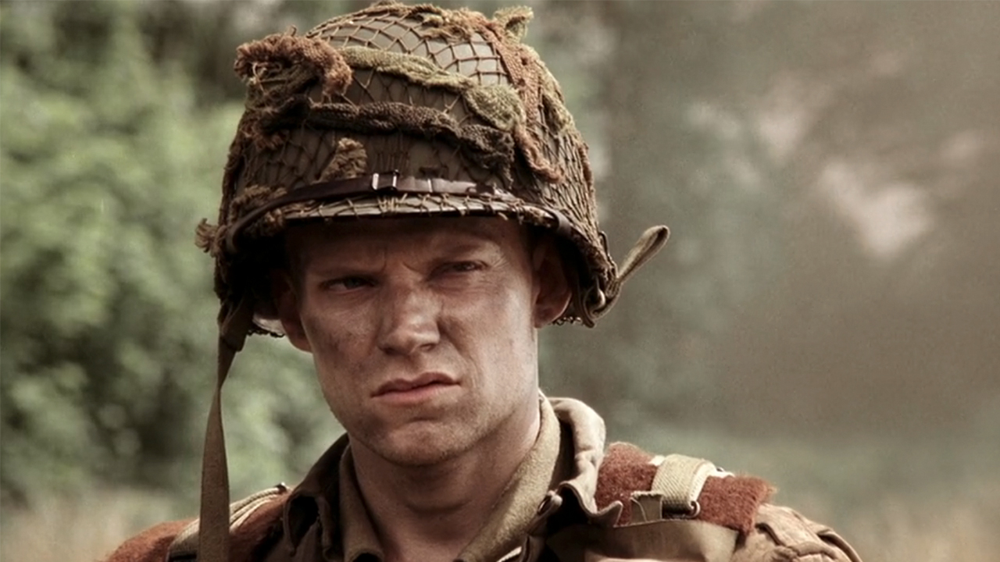
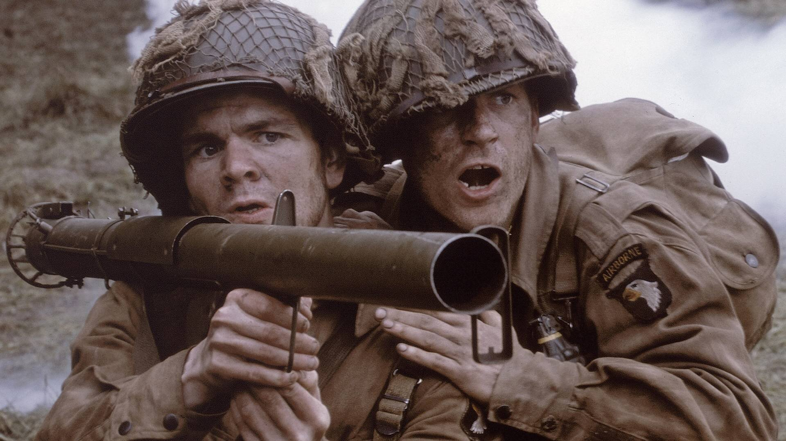
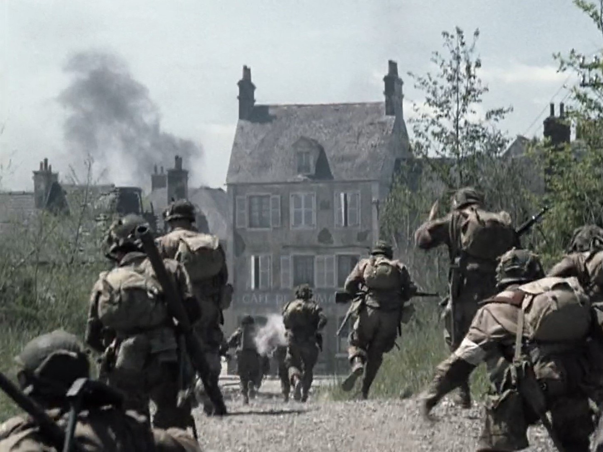
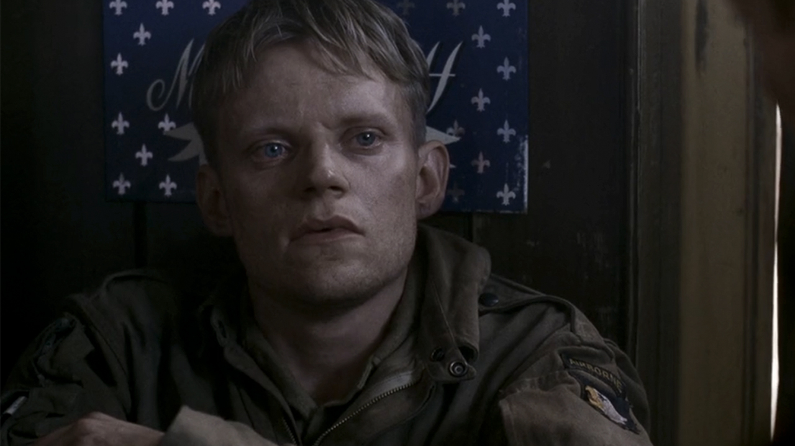

01
诺曼底 · 空降之后的集结他回到了连队，心还没有跟上

布莱斯人物配图；不指认归队或发现雪绒花的瞬间。剧情事实布莱斯在混乱的空降后与连队会合。前往卡朗唐的路上，他看见一名阵亡德军伞兵；对方身上的雪绒花被解释为勇敢的象征。[3]
这一场为什么重要 · 个人解读
这一开端让敌人的身份突然具体起来：他也可能曾主动证明自己的勇气。雪绒花先落在敌人身上，令“真正的士兵”成为布莱斯尚未得到、又急于得到的认同。他的迟疑从此与这件小物相互照应。

卡朗唐 · 1944 年 6 月至返回英国 · 诺曼底卡朗唐及周边
第 2 集的空降与炮阵地突击之后，E 连必须进入卡朗唐，再挡住德军反击。第 3 集把镜头交给布莱斯：旁人可以推进战线，他却先要面对自己的恐惧。道路、救护站、夜间散兵坑和前出侦察，组成一条重新行动的轨迹。温特斯给予安心，斯皮尔斯提出残酷的生存哲学，威尔士用球赛比喻缩小眼前任务。本页只讨论截至第 3 集的剧情；人物分析属于个人解读，并在结尾单独纠正布莱斯的历史结局。[1]
本页范围回顾本集与必要的前集背景；以下主题分析针对剧集呈现，历史补充另作说明。
8 个关键场景，连起本集的因果与变化。
按剧中叙事顺序排列。展开批注，阅读场景的意义。

布莱斯人物配图；不指认归队或发现雪绒花的瞬间。剧情事实布莱斯在混乱的空降后与连队会合。前往卡朗唐的路上，他看见一名阵亡德军伞兵；对方身上的雪绒花被解释为勇敢的象征。[3]
这一开端让敌人的身份突然具体起来：他也可能曾主动证明自己的勇气。雪绒花先落在敌人身上，令“真正的士兵”成为布莱斯尚未得到、又急于得到的认同。他的迟疑从此与这件小物相互照应。

本集进攻卡朗唐画面；此图呈现推进，不是温特斯下达出沟命令的特写。剧情事实进入卡朗唐的道路遭到火力封锁，部分士兵伏进路旁沟渠。温特斯催促他们起身跟上，让连队继续推进到城内，而非停在路边。[2]
对一个人来说，趴下是最自然的保护动作；对被切断的队伍来说，停下却可能让前面的人失去支援。指挥的难处在于把眼前本能与集体处境重新连起来。温特斯用身体先走出这一步，再要求他人跟上。
剧情事实E 连逐屋清理，德军炮火随后落在街道。利普顿催促士兵离开暴露区域，并在炮击中受伤；温特斯腿部也受轻伤，仍继续处理连队任务。[2]
战斗没有按照“抵达终点便松一口气”的节奏结束。空间每改变一次，危险也跟着改变。利普顿的作用在这里尤其清楚：把上级的作战意图转换成身边士兵此刻能执行的动作，自己也承受同一种风险。

布莱斯在救护站暂时失明 · 本集画面。剧情事实布莱斯说自己什么也看不见。温特斯没有指责他，而是答应安排撤离并安抚他；布莱斯的视力恢复后，温特斯仍让他留下观察再归队。[1]
这段对话最动人的地方是允许退出。布莱斯怕让别人失望，温特斯先解除这层负担，才让他重新产生行动的余地。剧集用很短的场景展示这种变化；我们可以分析叙事，不能据此把战时心理创伤写成几句话就能治好。
剧情事实威尔士把战斗比作逐步推进的球赛。随后，布莱斯向斯皮尔斯承认自己曾躲着不找部队；斯皮尔斯让他接受自己已经死去的想法，以此执行任务。[3]
威尔士缩小问题，把整场战争拆成眼前能完成的一步；斯皮尔斯则取消对生还的期待。这是两种戏剧化的恐惧管理方式。它们在同一集并置，并不要求观众认同后者，更不能将那套哲学当成战争唯一真实的声音。
剧情事实德军步兵和装甲力量反击，侧翼部队后撤，E 连仍守住阵地。温特斯鼓励缩在散兵坑里的布莱斯起身射击；美军装甲增援随后到达。[2]
此前的谈话在这里接受现实检验。布莱斯仍然恐惧，温特斯便把指令缩到起身、瞄准、开火几个动作。影片同时让我们看见其他人协同作战与装甲增援：守住防线依赖整个系统，不能只归功于一个人的精神转折。
剧情事实需要查看农舍情况时，布莱斯主动提出担任前导侦察员。他在行动中被狙击手击中，并得到同伴救助和撤离；剧中伤处呈现在颈部附近。[1]
如果故事只是勇气的奖赏，这一刻理应让他平安归来；本集却用受伤切断了这个期待。主动承担责任改变了他的选择，没有改变子弹的偶然性。把受伤读成胆怯的惩罚，或把勇气等同于生还，都会抹掉这一段的残酷。
英国 · 休整之后再次准备离开
剧情示意图剧情事实E 连返回英国，休整后再收到出发命令。马拉基取洗好的衣服时，店主请他顺带领取其他人的衣物；她念到许多无法来取的人，最后包括布莱斯。[3]
战场上的损失往往以枪声和伤口呈现，结尾却换成衣物与账单。店主不知道名字背后的遭遇，马拉基也很难逐一解释。洗衣还在等待，连队已经改变；布莱斯此时的缺席不能被直接解释为死亡。
切换阶段，点人物或关系，阅读具体证据。
集结与巷战：共同任务还不能消除个人恐惧。
用具体场景对照本集的两种处境。
救护站中的温特斯接受布莱斯的状态，允许撤离；需要守住阵地时，再给出具体可执行的鼓励。
夜间的斯皮尔斯把希望本身视为障碍，让布莱斯在思想上接受死亡。本图为布莱斯配图，非斯皮尔斯肖像。
承认眼前的人承受不住，先不追问其是否合格。
↔认为仍期待活下来，会妨碍执行任务。
安全感与逐项指令：休息、观察、起身、开火。
↔用极端观念切断对后果的犹豫。
本集呈现布莱斯受到安抚后恢复视力与行动。
↔本集没有证明接受死亡是一切勇气的来源。
这些并置首先是人物塑造与叙事结构。布莱斯后来开始行动，可能受到多重经历影响，不能把整个变化归到某一句话；更不能把影视情节当作心理创伤的处理方法。
短句原文、中文自译，以及它在这一刻的分量。
“It's gonna be okay.”会没事的。
布莱斯说自己看不见，温特斯承诺安排撤离并安抚他。中文为自译；本图是救护站画面。
这句话提供的是当下的安全感。结合后来发生的伤情，它不必被读成关于未来的保证，而是一个上级愿意先接住眼前士兵的承诺。[3]
英文短句核对来源列在篇末；中文为本页自译。配图的场景与出处随卡片标注。
只沿本集与此前的线索回看，不揭示后续情节。
剧情事实布莱斯先在德军伞兵身上看见雪绒花，后来又从自己射中的敌军身上取下一朵。[1]
个人解读同一件物品先令人畏惧，后来被收进口袋，可以被读作布莱斯确认自己已参与战斗的方式。这个私人记号很复杂：它既联系勇敢的想象，也遮不住另一个生命的结束。剧中对雪绒花的解释不在这里充当民俗史证据。
剧情事实威尔士留着备用伞丝绸，打算寄给凯蒂做婚纱。结尾洗衣店主念着仍未取走衣物的士兵姓名。[3]
个人解读婚纱和洗好的军服本来属于未来与日常，却都被战争改变。前者主动为回家预留可能，后者无意中显露缺席。将这两个细节并看，本集对于人的关心就不止停在其作战表现上。
剧情事实进城时士兵伏在路边沟渠；夜间布莱斯坦白空降后曾独自留在沟里；反击时他又缩在散兵坑中。[2]
个人解读沟渠反复出现，把战术掩护与心理停滞压在同一幅画面里。不能因一个姿势就判断是否胆怯：位置、任务与火力决定掩护是否有效。故事让布莱斯从留在原地到参与协同，强调的是行动关系的变化。
第3集结尾字幕称布莱斯未能从伤势中康复，于1948年去世。这是剧集字幕错误。PBS纪录片《A Company of Heroes》说明，他活过诺曼底，后来继续军旅生涯，并于1967年去世。这里纠正本集字幕，不涉及后续剧集剧情；剧中的颈部伤情表现也不能直接当成历史伤口记录。[7]
第3集让布莱斯从无法行动走到主动侦察，又让他在那次选择后受伤。洗衣店的名字把代价留在日常生活里：人没有回来，衣物却仍然整齐地等着。对勇气的肯定与对失去的哀伤，停留在同一幅画面中。
回到档案首页 ↑